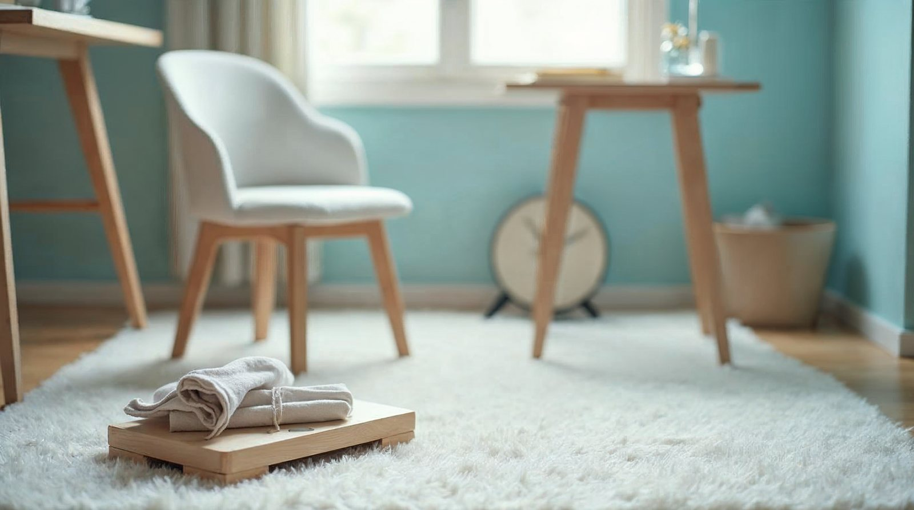
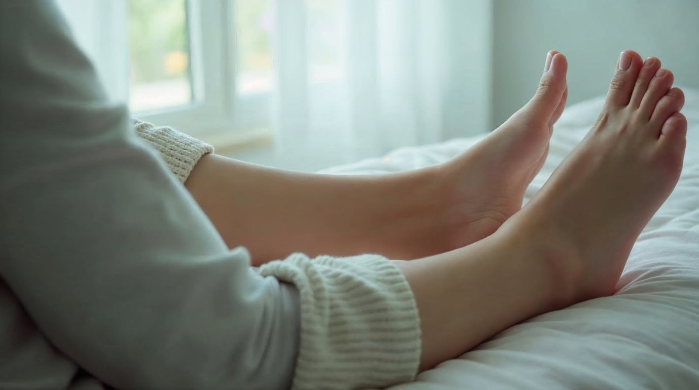
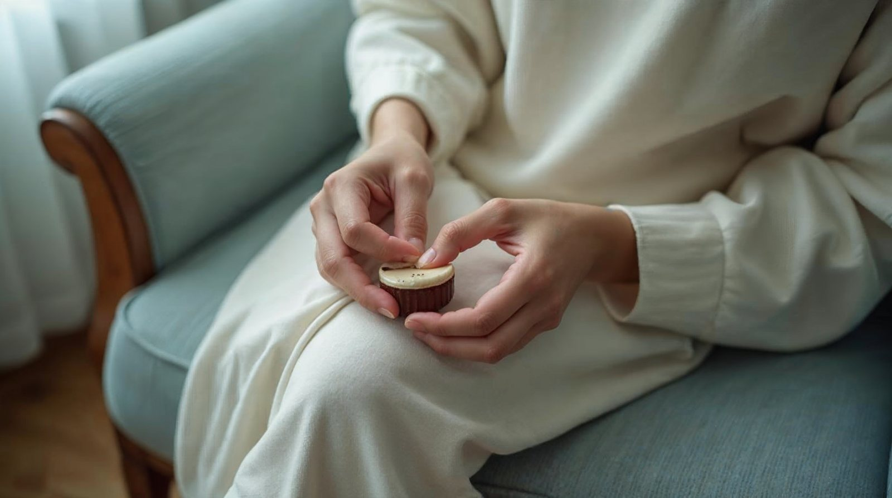
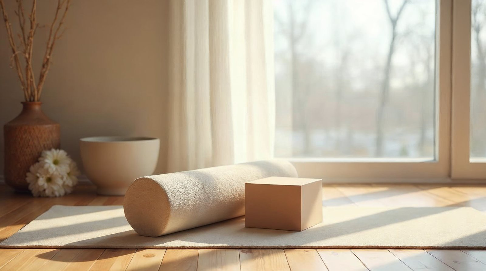
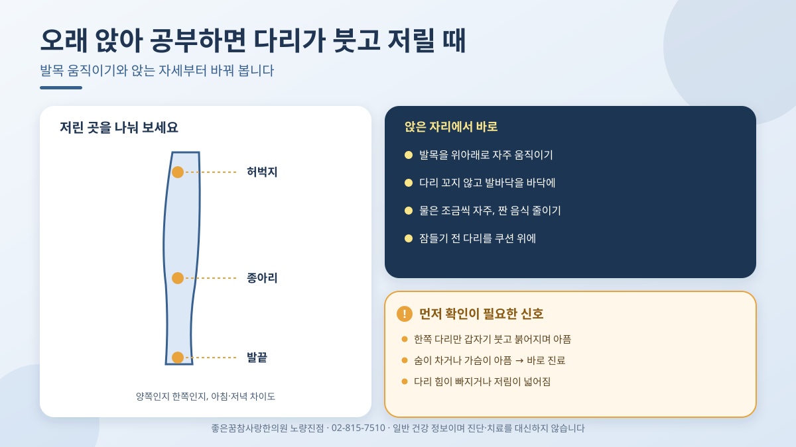

이종호 한의사 감수좋은꿈참사랑한의원 대표원장 (한의사 면허번호 19769)발행 2026-11-24 · 수정 2026-11-26
이 글의 차례
- 왜 이런 불편이 생길 수 있나요
- 붓기와 저림은 원인이 같을까요?
- 먼저 이렇게 여쭙니다
- 오래 앉으면 다리는 어떤 과정을 거쳐 붓고 저릴까요?
- 상황별 예시
- 스스로 점검해 보세요
- 일상에서 먼저 해 볼 수 있는 것
- 책상 앞에서 할 수 있는 다리 움직임
- 식사와 물은 어떻게 챙기나요?
- 공부 시간표에 움직임을 넣으려면?
- 잠자리에서 다리를 쉬게 하려면?
- 한의원에서 함께 살필 수 있는 경우
- 컨디션이나 생리 주기에 따라 달라지나요?
- 다리를 주무르거나 압박 스타킹을 써도 될까요?
- 얼마나 지켜보고 언제 상담할까요
- 의자와 책상은 어떻게 맞추면 좋을까요?
- 다시 오시면 무엇을 이어서 보나요?
- 이렇게 기록해 오시면 상담이 쉬워집니다
- 이런 증상은 먼저 확인이 필요합니다
앉아 있는 동안 발목을 자주 움직이고 다리를 꼬지 않는 것만으로도 저녁 다리 붓기와 저림을 줄이는 데 도움이 될 수 있습니다. 저녁이 되면 양말 자국이 깊게 남고 종아리가 묵직해진다는 수험생이 많고, 다리를 꼬고 앉다 보면 발이 저려 일어서기 힘들 때도 있습니다.
하룻밤 자고 나면 붓기가 빠지고 자세를 바꾸면 저림이 풀린다면 앉는 습관부터 바꿔 볼 수 있습니다. 아침까지 붓기가 남거나 저림이 자세와 상관없이 이어진다면 앉는 습관만의 문제가 아닐 수 있으니, 미루지 말고 진료로 원인을 확인해 보세요.
왜 이런 불편이 생길 수 있나요
- 오래 앉아 있으면 종아리 근육이 거의 움직이지 않아 다리 아래쪽의 혈액과 체액이 위로 올라가는 흐름이 느려질 수 있습니다.
- 다리를 꼬거나 의자 가장자리에 허벅지가 눌리면 신경과 혈관이 눌려 저린 느낌이 생기기 쉽습니다.
- 짠 음식과 라면을 자주 먹고 물을 적게 마신 날 붓기가 더 심하다고 느끼는 분이 있습니다.
- 허리와 골반이 굳어 있으면 엉덩이부터 다리로 이어지는 저림으로 느껴지기도 합니다.
- 겨울 독서실처럼 발이 차가운 곳에 오래 앉아 있으면 다리가 더 무겁고 저리다고 말하는 분이 많습니다.
- 한의학에서는 오래 움직이지 않으면 기혈의 흐름이 느려지고 몸에 습이 머물러 다리가 붓고 무겁다고 보기도 합니다.
붓기와 저림은 원인이 같을까요?
다리가 붓는 것과 저린 것은 함께 오는 경우가 많지만, 살펴야 할 곳은 조금 다릅니다. 저는 붓는 곳과 저린 곳, 그리고 언제 생기고 언제 풀리는지를 나눠 여쭙습니다.
- 양쪽 발목과 종아리가 저녁에 붓고, 다리를 올리고 자고 나면 빠진다면 오래 앉아 다리의 흐름이 느려진 경우를 먼저 생각합니다.
- 다리를 꼬거나 쪼그려 앉은 뒤 발이 저리고, 자세를 풀면 몇 분 안에 돌아온다면 신경이 잠시 눌린 경우가 많습니다.
- 엉덩이부터 허벅지 뒤, 종아리 바깥쪽으로 줄을 긋듯 저리고 허리를 숙일 때 더하다면 허리에서 내려오는 경우를 함께 봅니다.
- 발바닥이나 발끝이 양쪽 모두 화끈거리거나 감각이 둔하다면 혈당이나 영양 상태 같은 몸 전체의 원인도 확인해 봅니다.
수험생은 오래 앉기, 짠 식사, 부족한 수면이 한꺼번에 겹치기 쉽습니다. 예를 들어 저녁마다 양쪽 발목이 붓고 다리를 꼬면 쉽게 저린 경우라면, 앉는 자세와 식사를 함께 바꾸는 쪽으로 순서를 정합니다.
손발이 함께 저리고 차다면 손발이 저리고 차가울 때는 어떤 점을 먼저 확인하나요?도 함께 읽어 보세요.

먼저 이렇게 여쭙니다
- 하루에 앉아 있는 시간이 얼마나 되나요?
- 다리를 꼬거나 의자 위에 올리고 앉나요?
- 저린 곳은 발끝, 종아리, 허벅지 중 어디인가요?
- 짠 음식이나 라면을 자주 드시나요?
- 붓기는 양쪽인가요, 한쪽인가요? 아침에는 빠지나요?
- 저림이 허리를 숙이거나 오래 앉았을 때 더 심해지나요?
- 의자에 앉았을 때 발이 바닥에 편하게 닿나요?
- 생리 주기나 복용 중인 약에 따라 붓기가 달라지나요?
오래 앉으면 다리는 어떤 과정을 거쳐 붓고 저릴까요?
서 있거나 걸을 때는 종아리 근육이 수축하면서 다리 아래쪽에 머문 피와 체액을 위로 밀어 올립니다. 그런데 앉아서 거의 움직이지 않으면 이 펌프가 멈추다시피 해, 시간이 갈수록 발목과 종아리에 체액이 고이고 저녁이면 붓기로 나타납니다.
저림은 조금 다른 길로 옵니다. 다리를 꼬거나 허벅지 뒤가 의자 끝에 오래 눌리면 그 아래를 지나는 신경과 혈관이 압박을 받아 찌릿하거나 감각이 둔해집니다. 같은 자세가 매일 되풀이되면 그만큼 저림을 자주 느끼게 됩니다.
부종을 어떻게 나눠 보는지는 저녁마다 다리가 붓고 양말 자국이 깊게 남을 때, 부종은 무엇을 나눠 살피나요?에 더 자세히 적었습니다.
상황별 예시
- 예를 들어 스터디카페의 높은 의자에서 하루 열 시간 가까이 공부하는 수험생의 경우, 발이 바닥에 닿지 않아 허벅지 뒤쪽이 눌리고 저녁이면 종아리가 퉁퉁 붓기 쉽습니다. 발받침을 두거나 의자 높이를 낮춰 무릎과 엉덩이 높이를 맞추는 것부터 시작해 볼 수 있습니다.
- 예를 들어 공부하다 집중하면 한쪽 다리를 의자 위에 올리거나 양반다리로 앉는 경우, 일어서려는 순간 발이 저려 휘청거리기도 합니다. 자세를 바꾸고 싶을 때마다 일어나 몇 걸음 걷는 것으로 습관을 바꿔 볼 수 있습니다.
- 예를 들어 저녁을 컵라면이나 김밥으로 빨리 해결하고 다시 앉는 날이 많은 경우, 다음 날 아침까지 얼굴과 다리가 부어 있다고 느끼기도 합니다. 국물을 남기고 물을 나눠 마시는 것부터 바꿔 볼 수 있습니다.
스스로 점검해 보세요
- 한 번 앉으면 두 시간 넘게 일어나지 않는 날이 많다
- 다리를 꼬거나 의자 위에 올리고 앉는 습관이 있다
- 의자에 앉으면 발이 바닥에 닿지 않거나 까치발이 된다
- 저녁이면 양말 자국이 깊게 남는다
- 라면, 김밥, 편의점 도시락처럼 짠 식사가 하루 한 번 이상이다
- 물을 하루 세 컵도 마시지 않는다
세 가지 이상 해당된다면 앉는 자세와 식사부터 바꿔 보세요. 습관을 바꾼 뒤에도 저림이나 붓기가 그대로라면 진료 때 이 목록을 함께 보며 이야기 나누면 좋습니다.

일상에서 먼저 해 볼 수 있는 것
- 앉은 자리에서 발목을 위아래로 자주 움직이기
- 다리를 꼬지 않고 발바닥을 바닥에 대고 앉기
- 물을 조금씩 자주 마시고 짠 음식 줄이기
- 잠들기 전 다리를 쿠션 위에 올려 쉬기
- 추운 날에는 양말과 무릎 담요로 발과 종아리를 따뜻하게 하기
책상 앞에서 할 수 있는 다리 움직임
자리를 비우기 어려운 시간에도 앉은 채로 할 수 있는 움직임이 있습니다. 강의를 듣거나 문제를 풀다 30분에 한 번씩 떠올려 보세요.
- 발뒤꿈치를 바닥에 댄 채 발끝을 들었다 내리기를 스무 번
- 발끝을 바닥에 댄 채 발뒤꿈치를 들었다 내리기를 스무 번
- 한쪽 무릎을 펴서 다리를 앞으로 쭉 뻗고 5초 버틴 뒤 내리기, 양쪽 번갈아 다섯 번
- 발목을 안쪽, 바깥쪽으로 천천히 돌리기
- 엉덩이를 의자 깊숙이 넣고 허리를 세운 뒤 다시 앉기
종아리를 제2의 심장이라고 부르는 것도 앞에서 말씀드린 펌프 역할 때문입니다. 앉아 있는 동안에도 그 펌프가 멈추지 않도록 조금씩 움직여 주세요.
식사와 물은 어떻게 챙기나요?
붓기는 앉는 자세만큼 무엇을 먹고 마시는지에도 영향을 받습니다. 수험생 식사는 빠르고 간편한 것 위주가 되기 쉬우니, 몇 가지만 기준으로 정해 두세요.
- 컵라면과 찌개 국물은 반 이상 남기기
- 김밥이나 도시락에는 바나나, 방울토마토, 우유처럼 짜지 않은 것 하나 곁들이기
- 물병을 책상 위에 두고 한 시간마다 몇 모금씩 마시기
- 늦은 밤 야식, 특히 짠 과자와 라면은 줄이기
- 커피와 에너지 음료는 물을 대신하지 않도록 따로 마시기
물을 마시면 더 붓는다고 생각해 일부러 줄이는 분도 있는데, 수분이 부족하면 몸이 오히려 물을 붙잡아 두려 해 붓기가 남기도 합니다. 물은 한 번에 많이보다 조금씩 자주 마시는 것이 좋습니다.
공부 시간표에 움직임을 넣으려면?
다리 붓기와 저림은 얼마나 오래 앉느냐 못지않게 얼마나 오래 쉬지 않고 앉느냐에 영향을 받습니다. 하루 공부량은 그대로 두고 앉는 방식만 나눠도 저녁 다리 느낌이 달라질 수 있습니다.
- 휴대폰 타이머를 50분에 맞추고, 알람이 울리면 일어나 5분 걷기
- 물병을 작게 가져가 물을 채우러 자주 일어나기
- 암기 과목은 서서 하거나 걸으면서 소리 내어 외우기
- 점심과 저녁 식사 뒤에는 바로 앉지 말고 10분쯤 바깥을 걷기
- 졸릴 때 엎드려 자기보다 잠시 서서 스트레칭하기
예를 들어 오전 네 시간을 한 번에 앉아 공부하던 것을 50분씩 네 번으로 나누면, 공부 시간은 거의 그대로인데 종아리가 쉬는 시간이 세 번 생깁니다. 일주일 정도 해 보고 저녁 양말 자국이 어떻게 달라졌는지 비교해 보세요.
쉬는 간격을 정하는 방법은 오래 앉아 공부하거나 일할 때 허리와 골반은 얼마 간격으로 쉬어 주나요?에도 정리해 두었습니다.
잠자리에서 다리를 쉬게 하려면?
낮에 쌓인 붓기는 밤에 누워 있는 동안 상당 부분 빠집니다. 잠자리에서는 이런 것들을 챙겨 볼 수 있습니다.
- 잠들기 전 10분 정도 다리를 벽이나 쿠션 위에 올려 두기
- 따뜻한 물로 샤워하며 종아리와 발목에 물을 충분히 맞히기
- 잘 때 다리 아래에 얇은 베개를 받쳐 발이 심장보다 조금 높게 하기
- 자기 직전 짠 야식과 많은 물은 피하기
다리를 올렸을 때 오히려 허리가 불편하다면 무릎 아래에 쿠션을 받쳐 허리를 편하게 해 주세요. 잠이 부족한 다음 날 붓기가 더 남는다고 느끼는 분도 있어, 잠드는 시각을 일정하게 지키는 것도 함께 권합니다.

한의원에서 함께 살필 수 있는 경우
- 오래 앉은 뒤 다리가 저린 경우 허리와 골반, 앉는 자세를 함께 살핍니다.
- 다리가 자주 붓는 경우 식사와 잠, 활동량을 함께 살핍니다.
- 손발 저림이 함께 있는 경우 저림의 양상과 생활 습관을 함께 살핍니다.
좋은꿈참사랑한의원에서는 모든 분께 맥부터 짚으며 불편이 언제, 어떻게 나타나는지 여쭙고, 필요하다고 판단될 때 설진을 더해 몸 상태를 살핍니다. 하루 앉아 있는 시간과 의자 높이, 식사와 물 마시는 습관도 함께 듣습니다.
그다음 허리를 숙이고 젖히는 동작, 다리를 들어 올리는 동작에서 저림이 달라지는지 보고, 다리의 감각과 힘, 발목과 종아리의 붓기를 확인합니다. 저림이 허리에서 내려오는 모습이라면 허리와 골반의 움직임을 더 자세히 살핍니다.
상태에 맞춰 침·약침·한약 상담 등을 정합니다. 한약 상담은 지금 드시는 약을 확인한 뒤에 하고, 처방받은 약은 처방한 의사와 상의 없이 줄이거나 끊지 않도록 말씀드립니다. 귀가 전에는 기록해 볼 점과 다음에 확인할 일을 알려 드립니다.
컨디션이나 생리 주기에 따라 달라지나요?
같은 시간을 앉아 있어도 어떤 날은 다리가 가볍고 어떤 날은 유난히 무겁다고 말하는 분이 많습니다. 잠이 부족했던 날, 시험이나 모의고사로 긴장했던 날, 끼니를 거르고 늦게 몰아 먹은 날에 붓기가 더 심하다고 느끼기 쉽습니다.
여성은 생리 전 며칠 동안 몸에 물이 고이기 쉬워 다리와 얼굴이 더 붓는다고 느끼기도 합니다. 그래서 붓기를 기록할 때는 날짜와 함께 그날의 잠, 식사, 생리 주기를 같이 적어 두면 어떤 날 더 부었는지 흐름이 보입니다.
한의학에서는 이런 차이를 몸이 차고 기운이 떨어진 정도와 함께 살핍니다. 손발이 자주 차거나 소화가 더디고 몸이 무겁다면 그런 이야기도 진료 때 함께 들려주세요.
다리를 주무르거나 압박 스타킹을 써도 될까요?
저녁에 양쪽 종아리가 함께 부었다면 손으로 쓸어 올려 주는 방법을 집에서 해 볼 수 있습니다. 발목에서 무릎 쪽으로, 아래에서 위로 부드럽게 쓸어 주고, 아플 만큼 세게 누르지는 마세요. 한쪽 다리만 갑자기 부었다면 주무르지 않습니다.
압박 스타킹은 오래 앉아 있는 날 붓기를 덜어 주는 데 도움이 될 수 있습니다. 다만 너무 조이는 것을 오래 신으면 오히려 불편할 수 있고, 피부병이나 혈관 질환이 있다면 먼저 확인이 필요합니다. 처음에는 낮 동안만 신어 보고 다리 느낌을 살펴보세요.
주무른 뒤 오히려 더 아프거나 멍이 든다면 그 방법은 멈추고, 진료 때 어떻게 했는지 알려 주세요. 손으로 쓸어 주는 시간은 하루 5분 안팎이면 충분합니다.
얼마나 지켜보고 언제 상담할까요
- 앉는 자세와 식사, 물 마시는 습관을 바꾼 뒤 1~2주는 저녁 붓기와 저림을 지켜보세요.
- 2~3주가 지나도 저림이 매일 이어진다면 상담을 권합니다.
- 저림이 점점 넓어진다면 2~3주를 채우지 말고 일찍 진료를 받아 보세요.
의자와 책상은 어떻게 맞추면 좋을까요?
앉아서 생기는 다리 저림은 의자 가장자리가 허벅지 뒤를 누르는 데서 시작되는 경우가 많습니다. 독서실이나 스터디카페는 의자를 고르기 어려운 곳이 많아, 가진 것으로 높이를 맞추는 방법을 알아 두면 도움이 됩니다.
- 앉았을 때 무릎이 엉덩이와 비슷한 높이가 되고 발바닥 전체가 바닥에 닿게 맞추기
- 의자가 높다면 발받침이나 두꺼운 책 몇 권을 발밑에 두기
- 엉덩이를 의자 깊숙이 넣고, 무릎 뒤와 의자 앞 끝 사이에 손가락 두세 개가 들어갈 틈 두기
- 등받이와 허리 사이가 뜨면 작은 쿠션으로 채워 몸이 앞으로 미끄러지지 않게 하기
의자를 맞춘 날과 맞추지 않은 날 저녁의 저림을 비교해 보면 차이를 알기 쉽습니다.
다시 오시면 무엇을 이어서 보나요?
붓기와 저림은 생활 습관과 함께 오르내리는 경우가 많아 이어서 살피는 것이 중요합니다. 다시 오시면 맥을 다시 짚으며, 지난번에 정한 앉는 자세와 쉬는 간격, 식사 습관을 해 보니 어땠는지부터 여쭙습니다.
그다음 저녁과 아침의 붓기, 저림이 생기는 자세와 시간이 어떻게 바뀌었는지 확인하고, 허리와 골반의 움직임도 다시 봅니다. 지키기 어려웠던 부분은 공부 시간표에 맞게 방법을 바꾸고, 치료도 그 변화를 보며 조정합니다.

이렇게 기록해 오시면 상담이 쉬워집니다
- 저린 위치(발끝, 종아리, 허벅지)와 저림이 생기는 자세
- 붓기가 양쪽인지 한쪽인지, 아침과 저녁의 차이
- 하루 앉는 시간과 물·짠 음식 섭취
- 허리 통증이 함께 있는지
- 저녁과 다음 날 아침의 발목 사진(양말 자국이 남는지 비교)
- 의자 높이와 앉았을 때 발이 바닥에 닿는지
- 복용 중인 약과 생리 주기에 따른 붓기 변화
하루 열 시간 가까이 책상 앞을 지킨 날이면 다리도 그만큼 함께 버텨 준 셈입니다. 오늘 밤에는 잠들기 전 10분, 다리를 올려 두는 것부터 해 보세요. 다음에 오시면 저녁 양말 자국과 저림이 생기는 자세부터 여쭙겠습니다.
이런 증상은 먼저 확인이 필요합니다
- 한쪽 다리만 갑자기 붓거나 아프고 붉어지는 경우(혈전 의심), 갑자기 숨이 차거나 가슴이 아픈 경우
- 다리 힘이 점점 빠지거나 대소변을 가리기 어려운 경우
이런 신호가 있으면 한의원보다 가까운 병원이나 응급실을 먼저 찾으세요.

여쭙는 것
- 하루에 앉아 있는 시간이 얼마나 되나요?
- 다리를 꼬거나 의자 위에 올리고 앉나요?
- 저린 곳은 발끝, 종아리, 허벅지 중 어디인가요?
생활에서 해 볼 것
- 앉은 자리에서 발목을 위아래로 자주 움직이기
- 다리를 꼬지 않고 발바닥을 바닥에 대고 앉기
- 물을 조금씩 자주 마시고 짠 음식 줄이기
한의원에서 함께 살필 것
- 오래 앉은 뒤 다리가 저린 경우 허리와 골반, 앉는 자세를 함께 살핍니다.
- 다리가 자주 붓는 경우 식사와 잠, 활동량을 함께 살핍니다.
- 손발 저림이 함께 있는 경우 저림의 양상과 생활 습관을 함께 살핍니다.
먼저 확인이 필요한 신호
- 한쪽 다리만 갑자기 붓거나 아프고 붉어지는 경우(혈전 의심), 갑자기 숨이 차거나…
- 다리 힘이 점점 빠지거나 대소변을 가리기 어려운 경우
한눈에 보는 표
| 구분 | 핵심 |
|---|---|
| 여쭙는 것 | 하루에 앉아 있는 시간이 얼마나 되나요? 다리를 꼬거나 의자 위에 올리고 앉나요? |
| 생활에서 해 볼 것 | 앉은 자리에서 발목을 위아래로 자주 움직이기 다리를 꼬지 않고 발바닥을 바닥에 대고 앉기 |
| 한의원에서 함께 살필 것 | 오래 앉은 뒤 다리가 저린 경우 허리와 골반, 앉는 자세를 함께 살핍니다. 다리가 자주 붓는 경우 식사와 잠, 활동량을 함께 살핍니다. |
| 먼저 확인이 필요한 신호 | 한쪽 다리만 갑자기 붓거나 아프고 붉어지는 경우(혈전 의심), 갑자기 숨이 차거나 가슴이 아픈 경우 다리 힘이 점점 빠지거나 대소변을 가리기 어려운 경우 |
자주 묻는 질문
다리가 저리면 바로 일어나도 되나요?
저림이 풀릴 때까지 발목을 먼저 움직인 뒤 천천히 일어나는 것이 넘어짐을 줄이는 데 좋습니다.
저림이 매일 있는데 괜찮을까요?
자세를 바꿔도 계속되거나 점점 심해진다면 진료를 받아 원인을 확인하는 것을 권합니다.
저녁에 부은 다리가 다음 날 아침엔 빠져야 하나요?
하룻밤 쉬고 대부분 빠진다면 생활 습관과 관련된 경우가 많지만, 아침까지 계속된다면 진료로 확인해 보시기를 권합니다.
진료 시간은 어떻게 되나요?
좋은꿈참사랑한의원은 평일 09:30~20:00(점심 13:00~14:00), 토·일·공휴일 09:30~15:00에 진료합니다.
좋은꿈참사랑한의원은 재진 때 지난번 이야기부터 이어서 여쭙니다. 진료시간과 예약은 오시는 길에서 확인하세요.
어디서 상담받을 수 있나요?
좋은꿈참사랑한의원은 서울 동작구 만양로2길 2 신성빌딩 3층·5층(서울 동작구 상도동, 7호선 상도역 3번 출구 근처)에 있습니다. 한의사 3명(이종호 대표원장, 조영기 수석진료원장, 정원영 진료원장)이 진료합니다. 진료시간은 평일 09:30~20:00(점심 13:00~14:00), 토·일·공휴일 09:30~15:00이며, 방문 전 전화로 확인을 권합니다. 예약은 네이버 예약, 카카오톡 상담, 전화 02-815-7510로 받습니다.
이 글은 일반적인 건강 정보이며 개인의 진단이나 치료를 대신하지 않습니다. 증상이 있거나 복용 중인 약이 있다면 진료를 통해 확인하세요. 치료 효과는 개인마다 다를 수 있습니다.
작성 기준: 일반적으로 알려져 있는 건강 정보를 참고해 정리했습니다(대표원장 감수). 증상 기록은 1~2주 동안 하루 1회, 비슷한 시간에 적어 오시면 지난 상태와 비교하기 쉽습니다.